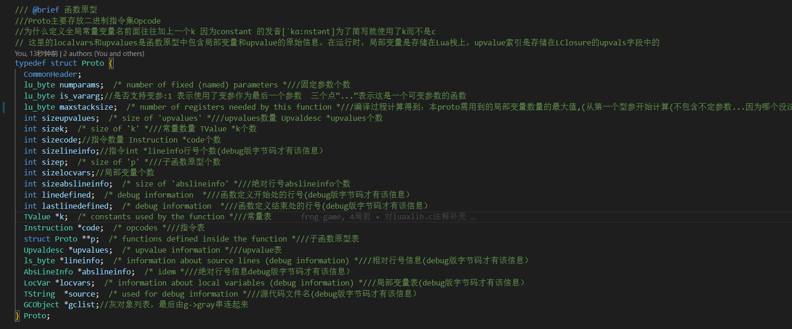
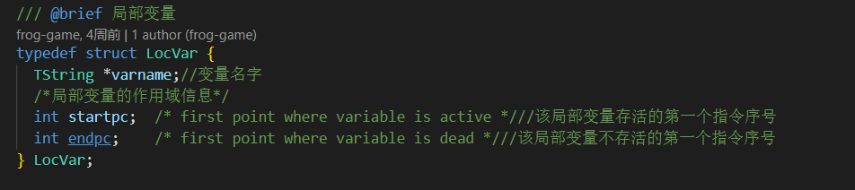
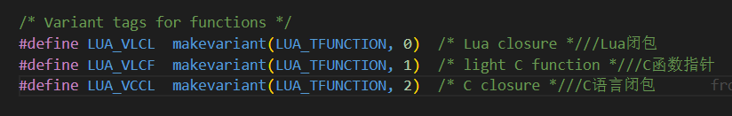
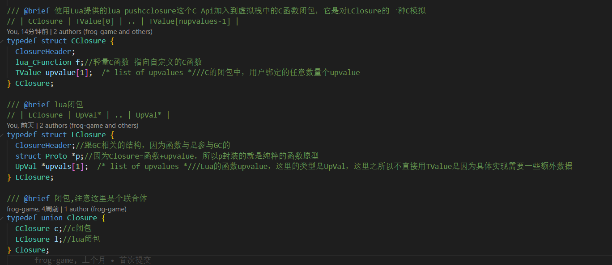
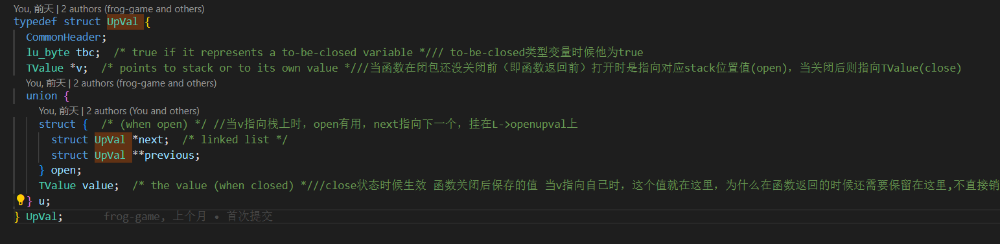
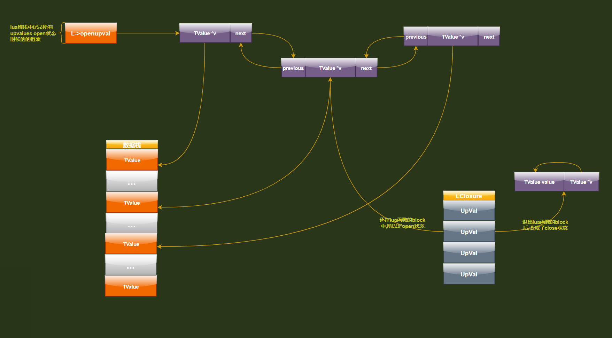
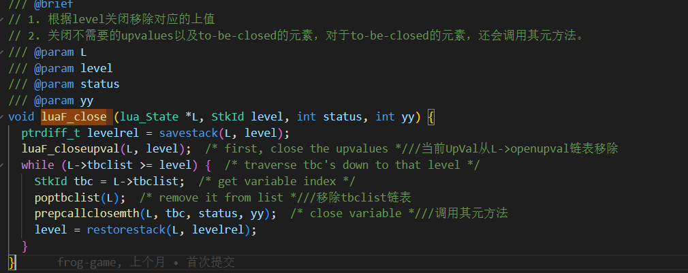
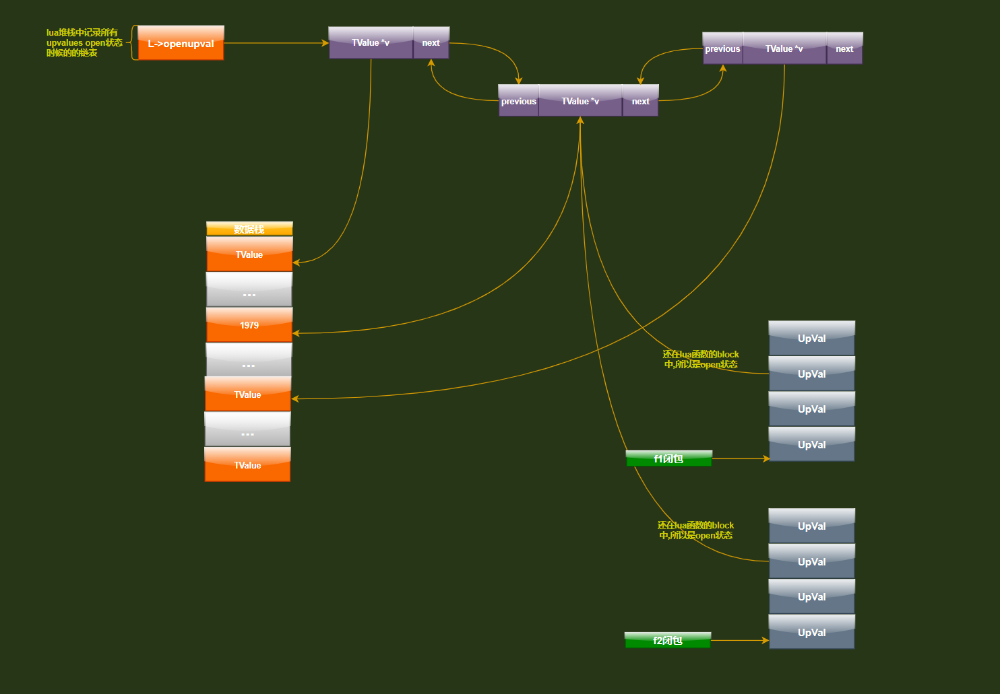

函数原型

-
上面
proto的大部分参数来源是lcode.c,ldump.c,llex.c,lparser.c,lundumpc这几个文件赋予的 -
locvars在这里并不指实际的局部变量,实际的局部变量存在数据栈中,存的只是也写解析lua文件以后的一些数据 -
upvalues也不是指upvalues变量,而实际存储他们的位置在CClosure->upvalue和LClosure->upvals中 -
numparams表示函数有几个参数,is_vararg表示参数是否为可变参数列表,例如这个函数声明function f1(a1, a2, ...) ...... end三个点
…表示这是一个可变参数的函数.f1()在这里的numparams为2,并且is_vararg的值为1. -
maxstacksize字段 编译过程计算得到代表本proto需用到的局部变量数量的最大值,从第一个型参开始计算(不包含不定参数...因为哪个没法知道确切的数量 实际调用时传给不定参数...的实参在L->func---->L->base之间,数量在OP_VARARG指令中已给出计算公式
变量的查找

局部变量,全局变量,上值其实在编译期就知道结果了主要是通过下面singlevar和singlevaraux两个函数确定

我们可以通过这两个函数的分析,可以看出,在查找变量的方式如下

总结
局部变量存在数据栈中上值存在CClosure->upvalue和LClosure->upvals中全局变量存在_ENV中- 在
Lua中,函数参数也是局部变量
尾调用
function f()
…
return g()
end
因为调用g()后,f()中不再执行任何代码,所以不需要保留f()的调用栈信息,Lua做了这样的优化,称为尾调用消除,g()返回后,控制点直接返回到调用f()的地方,有点类似c语言的goto语句,这样做也能减少栈的空间
lua函数种类

从lua的源码中我们可以看出lua一共分为3种
| 宏 | 类型 | 注解 |
|---|---|---|
LUA_VLCL |
Lua闭包 |
用lua脚本写的函数.有上值,运行时需要闭包LClosure,函数原型Proto |
LUA_VLCF |
轻量C函数 |
用C写,没有上值.运行时不须要闭包,函数原型lua_CFunction |
LUA_VCCL |
C语言闭包 |
用C写,有上值.运行时需要闭包CClosure,函数原型lua_CFunction |
闭包

C闭包
Lua在执行到fucntion ... end表达式或者c层调用lua_pushcclosure

会创建一个函数对象,内存布局如下
lua闭包
lua闭包和C闭包不太一样它的动态内容里面不是Tvalue类型而是UpVal类型,为啥要这样类型呢,主要还是因为Lua层的代码需要更多的信息处理,比如不同函数层次的调用,函数return之后上值的处理,UpVal还提供还原函数和子函数之间共享数据的方法

内存布局如下

upvalue 提供一种闭包之间共享数据的方法
UpVal有两种状态open状态 和close状态

open状态:还在lua函数的block中,所以是open状态,并且放入L->openupval链表当中,同时TValue *v指针指向数据栈数据的位置close状态:退出lua函数的block后,变成了close状态,并且放入L->openupval链表当中,同时TValue *v指针指向TValue value成员,也就是存放close值得地方
闭包的创建


从上我们可以看出当虚拟机执行OP_CLOSURE指令的时候,就进入luaF_newLclosure函数创建一个lua闭包,并根据proto->sizeupvalues数量对上值进行填充,这里有个注意点,就是上值的填充会根据instack标识来判断是直接从上值列表进行赋值,还是需要通过luaF_findupval来从L->openupval列表中查找上值,找不到创建一个新的upval挂载入虚拟机openupval
-
instack指明这个upvalue会存在哪里,有两种情况要考虑：uv如果是上一层函数的局部变量,且这个上层函数还在活动中,那么该局部变量一定还在上层函数的栈中.此时,instack为1,表明它在栈中,idx指定在栈中的索引相对于上层函数的栈基址.uv如果是上一层函数之外的局部变量,就像下面代码这样：local x = 1 local function func() local function innerfunc() return x + 1 end endx在上两层函数之外声明,Lua是这样解决这个问题的：首先func会把x当成upvalue记录下来,然后innerfunc再从func的upvalue数组寻找.所以这种情况下,instack为0,则idx表示上层函数uv列表的索引.
闭包的关闭
当函数执行完毕会调用luaF_close


其实这里可以发现函数没有关闭时,引用的内存还是openupval上,关闭后就重新赋值了一份,这个时候upval就不是共享的了,每个闭包一份了
因为有upval的存在这个也是因为lua比较难正确性热更新的其中一个原因
upvalue的3中情况
upvalue不共享情况
function f1(n)
-- 函数参数也是局部变量
local function f2()
print(n) -- 引用外包函数的局部变量
end
return f2
end
g1 = f1(1979)
g1() -- 打印出1979
g2 = f1(500)
g2() -- 打印出500
这种情况其实就是因为f1在退出自己的block的时候重新赋值了一份,这个时候upval就不是共享的了,而是单独存在了一份,这也说明了一个问题,当你在次调用f1的时候,它因为不是共享所以不会在利用前一次调用f1时候生成的upval

一个函数创建的闭包共享一份upvalue
function Create(n)
local function foo1()
print(n)
end
local function foo2()
n = n + 10
end
return foo1,foo2
end
f1,f2 = Create(1979)--创建闭包
f1() -- 打印1979
f2()
f1() -- 打印1989
f2()
f1() -- 打印1999
f1,f2闭包共享create函数的局部变量n

同一闭包创建的其他的闭包共享一份upvalue
function Test(n)
local function foo()
local function inner1()
print(n)
end
local function inner2()
n = n + 10
end
return inner1,inner2
end
return foo
end
t = Test(1979)--创建闭包（共享一份upvalue）
f1,f2 = t()--创建闭包
f1() -- 打印1979
f2()
f1() -- 打印1989
g1,g2 = t()
g1() -- 打印1989
g2()
g1() -- 打印1999
f1() -- 打印1999
g1和g2与f1和f2共享同一个upvalue.因为g1和g2与f1和f2都是同一个闭包t 创建的,所以它们引用的upvalue (变量n)实际也是同一个变量,而它们的upvalue引用都会指向同一个地方

更详细的注释请去我的GitHub地址
以下是我几乎每行都加了注释的GitHub地址